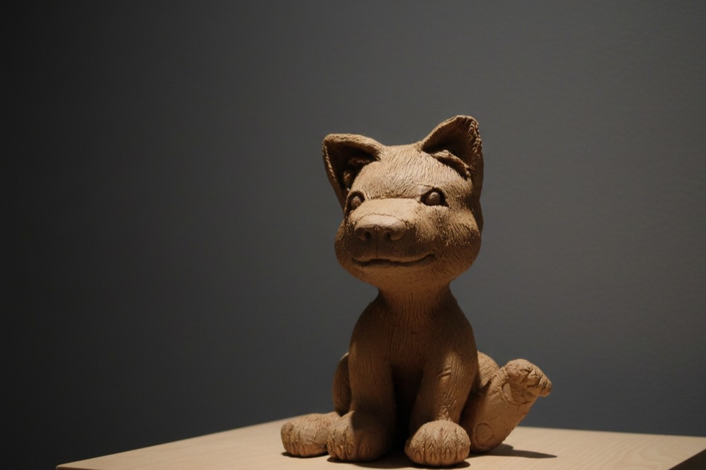
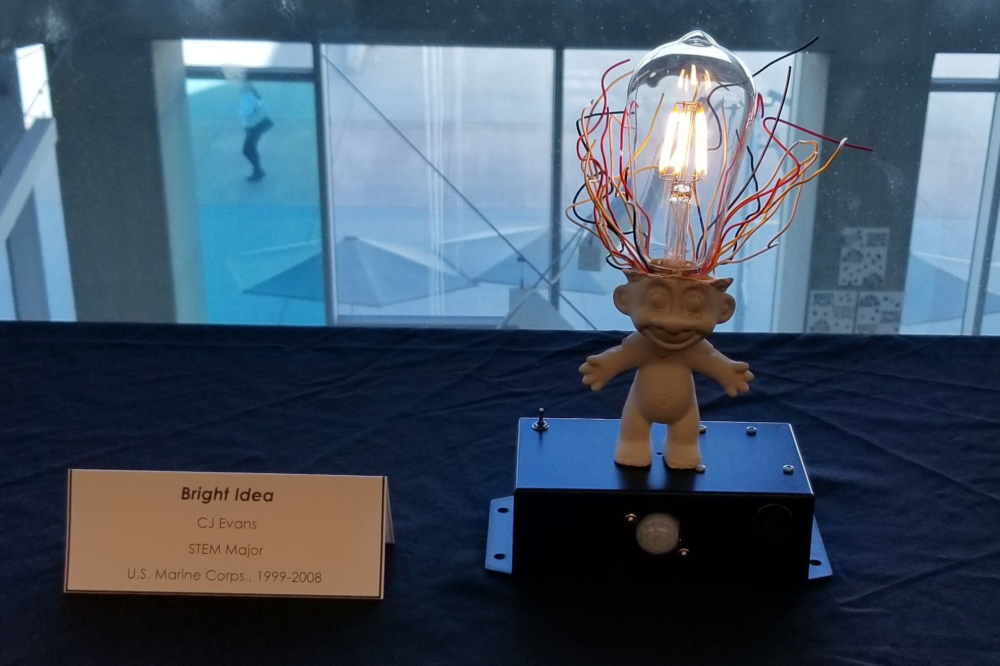

01Art Studio
Visual work, objects, sculpture, photography, design, and other forms of making where material, image, and narrative meet.
Creative practiceCreative Studio · Research · Ideas
Researching the probable, possible, and probably impossible things.
TonboKurai Studio
TonboKurai brings together art, technology, experimentation, and research. The studio is built around curiosity: examining how things work, how they might work differently, and what can be made when technical and creative practices are allowed to overlap.
Explore
These areas retain the broad character of TonboKurai while allowing individual projects and ventures to develop their own identities.

01Visual work, objects, sculpture, photography, design, and other forms of making where material, image, and narrative meet.
Creative practice
02Exploration of systems, sensing, hardware, emerging technologies, and the ideas that sit between practical engineering and future possibility.
Technical inquiryResearch, commentary, educational work, and interdisciplinary thinking focused on asking better questions before settling for familiar answers.
Ideas & perspectiveProbable · Possible · Impossible
Some ideas are practical. Some are speculative. Some only become useful after enough people stop assuming they are impossible.
About
The studio has evolved across art, design, research, and technology rather than remaining tied to a single medium. Its purpose is less about defining a category and more about providing a place for exploration, experimentation, and the development of ideas.
Today, TonboKurai functions as the connective identity behind work that may ultimately live within more specialized creative, technical, or personal projects.
Contact